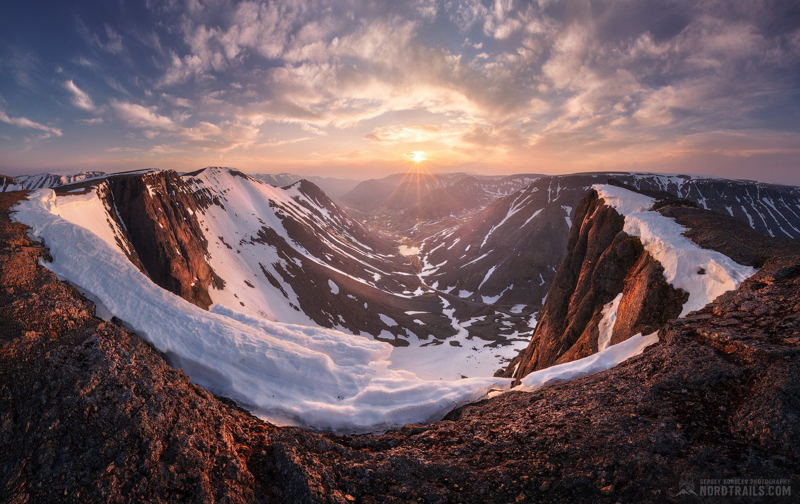

Почему Хибины?
Хибины — одни из самых красивых и доступных горных массивов России. Здесь сочетаются тундра, скалы, озёра и древние легенды саамов.
Этот маршрут идеально подходит для опытных туристов, готовых к 7–9 дням в дикой природе. Вы пройдёте через ущелья, перевалы и озёра, увидите нетронутую природу и научитесь ориентироваться в условиях Арктики.
📍 Интерактивная карта
Точные координаты, подложки, навигация.
🎒 Полный гид
Снаряжение, безопасность, рекомендации.
📥 Скачать трек
GPX, KML, офлайн-карты.